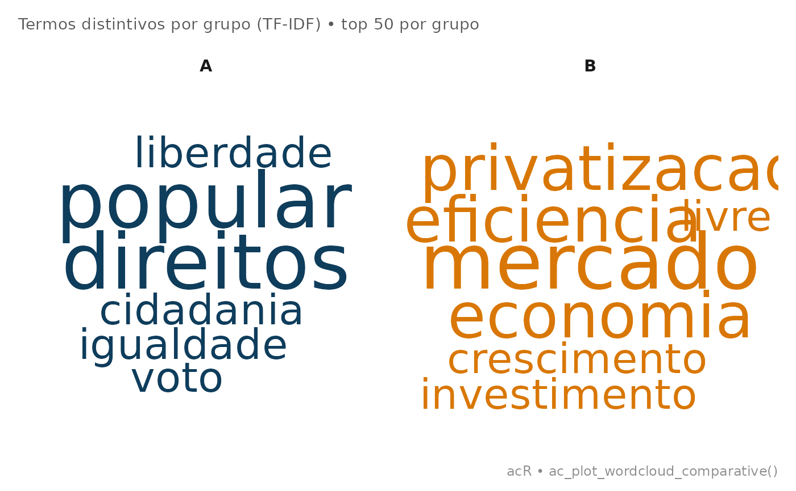

Nuvem de palavras comparativa entre grupos
Source:R/ac_plot_wordcloud_comparative.R
ac_plot_wordcloud_comparative.Rdac_plot_wordcloud_comparative() gera nuvens de palavras comparativas
entre N grupos de documentos, dispostas em facets lado a lado. Usa
TF-IDF (calculado tratando cada grupo como um "documento") para
identificar os termos mais distintivos de cada grupo.
Aceita 2, 3, 4+ grupos: cada grupo vira uma faceta.
Usage
ac_plot_wordcloud_comparative(
corpus,
group,
max_words = 50L,
colors = NULL,
title = NULL,
seed = 42L,
backend = c("auto", "ggwordcloud", "ggplot"),
...
)Arguments
- corpus
Objeto
ac_corpuscom coluna de metadado de grupo.- group
Coluna de agrupamento (nome sem aspas ou string). Deve ter pelo menos 2 valores unicos.
- max_words
Número máximo de palavras por grupo. Padrão:
50.- colors
Vetor de cores (uma por grupo, na ordem alfabetica dos grupos). Padrao: as primeiras N cores de
ac_palette().- title
Título do gráfico. Padrão:
NULL.- seed
Semente para o posicionamento aleatorio dos termos. Padrao
42L(garante layout reproduzivel entre chamadas).- backend
Motor de renderizacao:
"auto"(padrao, prefereggwordcloudcom facets),"ggwordcloud"ou"ggplot"(facets com geom_text + jitter reproduzivel).- ...
Ignorado.
Examples
# Corpus dividido em dois grupos com vocabulario contrastante
df <- data.frame(
id = paste0("d", 1:6),
texto = c(
"democracia participacao popular voto",
"direitos cidadania liberdade democracia",
"participacao popular igualdade direitos",
"mercado economia privatizacao eficiencia",
"privatizacao mercado livre eficiencia",
"economia crescimento mercado investimento"
),
grupo = c("A","A","A","B","B","B")
)
corpus <- ac_corpus(df, text = texto, docid = id)
# Nuvem comparativa: termos distintivos de cada grupo
ac_plot_wordcloud_comparative(corpus, group = grupo)
#> Warning: Some words could not fit on page. They have been removed.
